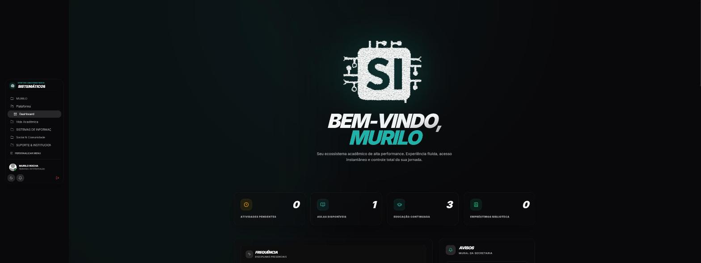
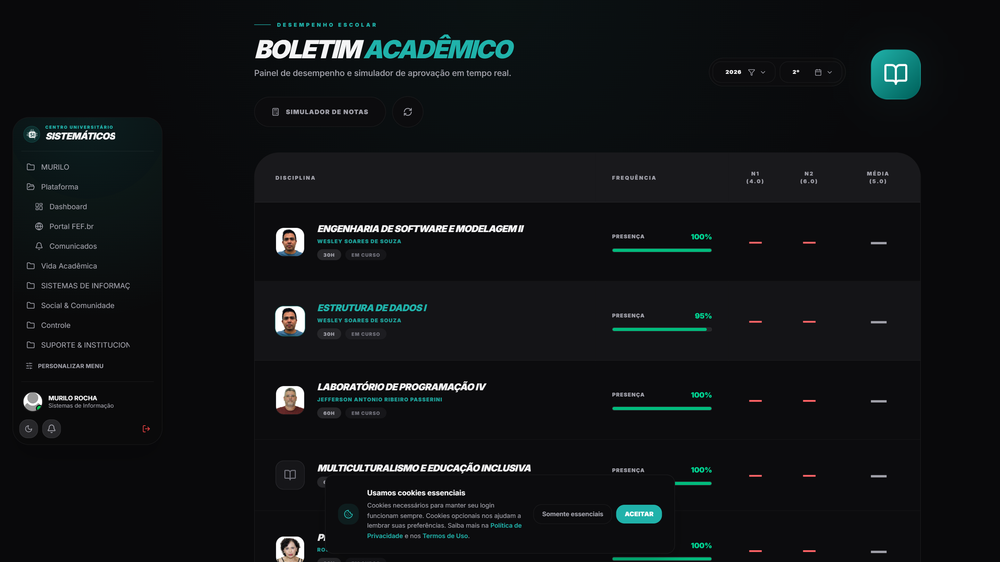
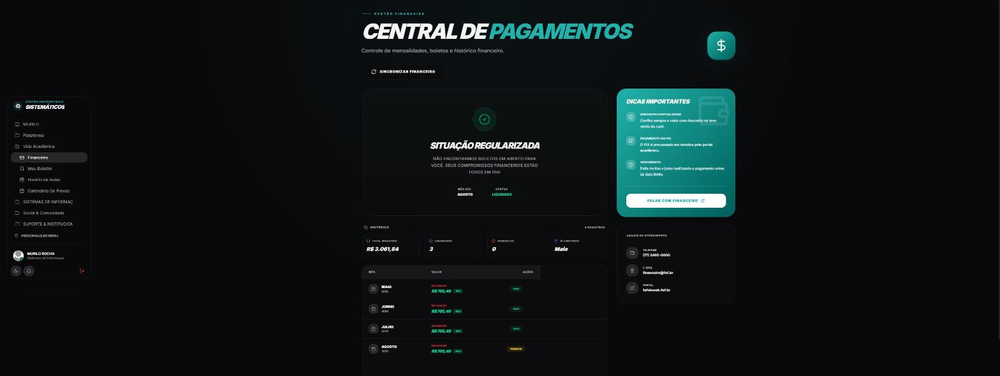
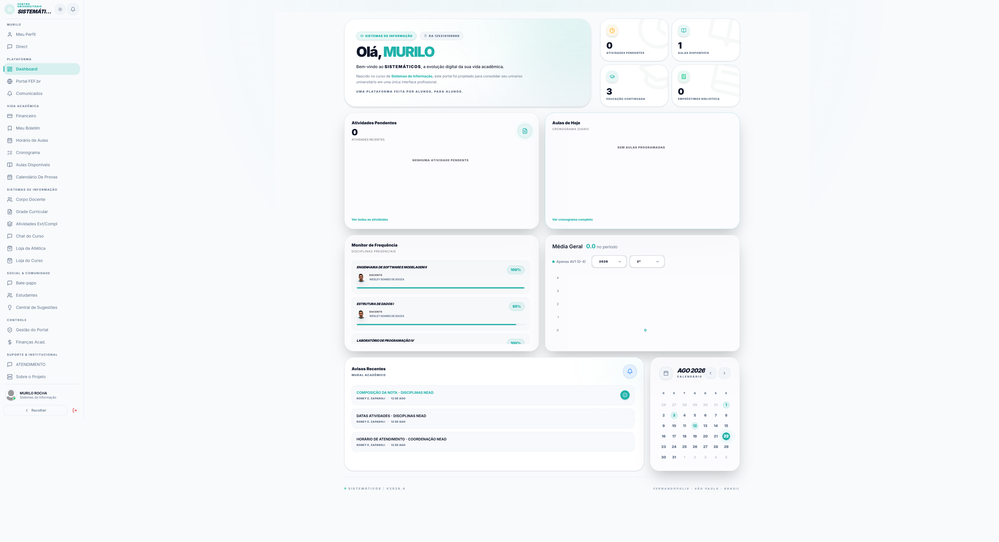
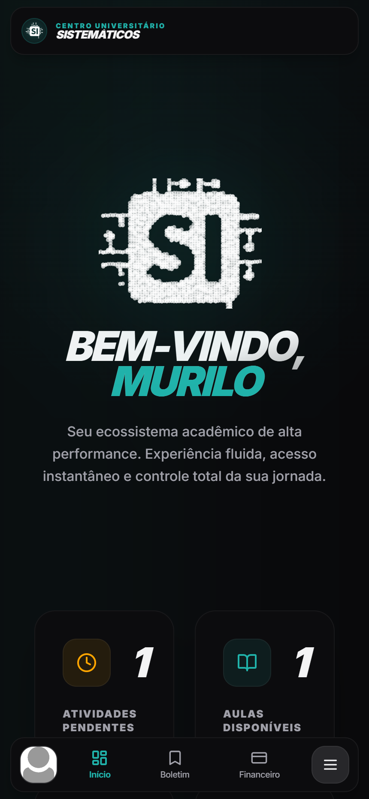
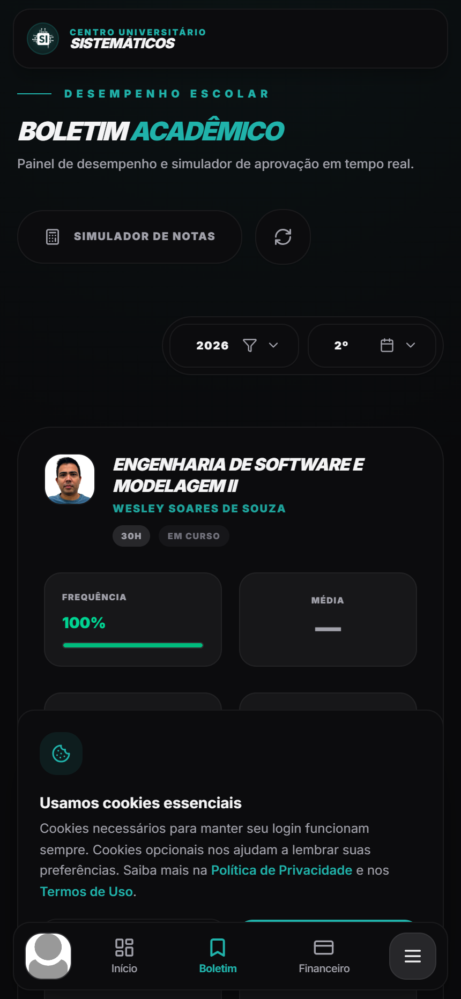

Uma experiência acadêmica moderna, em tempo real e sem atrito.
Desenvolvido de forma independente como uma camada de alta performance sobre o portal institucional legado da UniFEF — 12 módulos integrados, zero duplicação de dados e criptografia de ponta a ponta.

Matriz de Impacto: Portal Oficial vs. Sistemáticos
Como os 12 módulos do Sistemáticos eliminam as principais dores da rotina acadêmica dos estudantes.
1. Boletim & Médias
Tabelas estáticas sem cálculo, exigindo recarregar a página para trocar de semestre.
Cálculo dinâmico de médias ponderadas + simulador de aprovação (*"quanto preciso na P2?"*).
2. Vida Acadêmica
Cronogramas soltos em PDFs e menus fragmentados.
Horários semanais, faltas limite por matéria e calendário de provas unificados.
3. Financeiro & PIX
Apenas download de PDF com código de barras tradicional.
Status de parcelas em aberto e quitadas com geração instantânea de PIX Copia e Cola.
4. Chat em Tempo Real
Inexistente — nenhum canal interno de interação entre alunos.
Chat em tempo real (Socket.IO) multiplexado por sala de turma, curso e mensagens diretas.
5. Google Classroom
Aluno precisa alternar entre múltiplos logins e abas.
Feed integrado com materiais de aula e prazos de entregas sincronizados.
6. Hub Acadêmico & Carreira
Inexistente.
Banco colaborativo de provas antigas, trilhas de estudo e networking entre alunos.
7. Ferramentas & ABNT
Formatação manual de capas e trabalhos acadêmicos.
Gerador automático de capas no padrão ABNT com preenchimento institucional.
8. Tarefas & Kanban
Dependência de planilhas e aplicativos externos.
Quadro Kanban pessoal para organizar trabalhos individuais e em grupo.
9. Responsividade PWA
Layout quebrado em celular, zoom obrigatório.
PWA instalável, navegação mobile pensada para uso de uma mão e tema escuro nativo.
10. Avisos & Editais
Notificações perdidas em murais desorganizados.
Feed em tempo real via WebSocket de avisos institucionais e comunicados de sala.
11. Calendário de Provas
Datas de exames e substitutivas dispersas em documentos avulsos.
Contagem regressiva automática com marcadores visuais de urgência (*Hoje*, *Próxima*).
12. Matriz Curricular
Grade curricular estática e de difícil visualização de progresso.
Árvore interativa de pré-requisitos, matérias cursadas e horas complementares pendentes.
Rigor de Engenharia & Segurança
Decisões arquiteturais fundamentadas em privacidade, escalabilidade e conformidade com a LGPD.
Zero Duplicação de Dados
O servidor não armazena notas, faltas ou cadastros acadêmicos. Cada requisição é resolvida ao vivo direto contra o portal institucional oficial via gateway seguro.
Criptografia AES-256-GCM
Credenciais e sessões ativas são cifradas em memória e repouso transitório com autenticação GCM. Sessões expiram após 12h e são purgadas a cada 5 minutos.
Express 5 & Socket.IO
80 rotas REST com autorização estrita baseada na sessão (zero trust no cliente) e 22 eventos WebSocket multiplexados por salas de turma.
Galeria de Telas do Sistema
Capturas em alta resolução das principais interfaces em modo desktop e mobile.
Boletim Acadêmico & Médias

Financeiro & PIX

Dashboard (Tema Claro)

Mobile PWA (Dashboard & Boletim)

